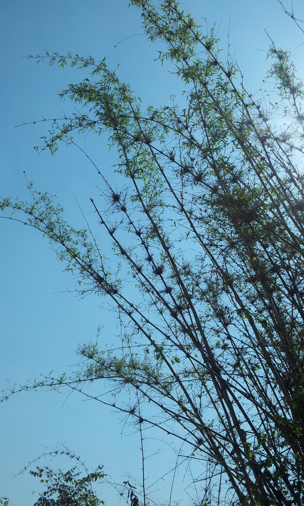
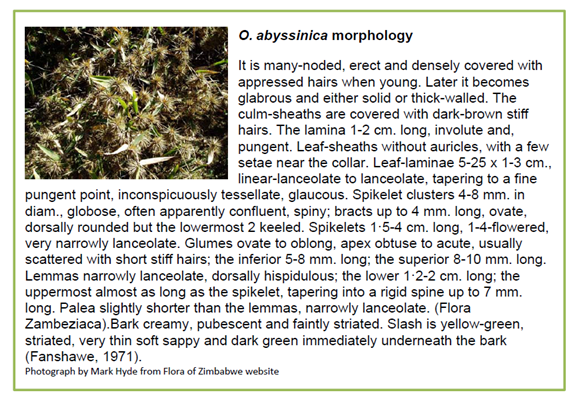
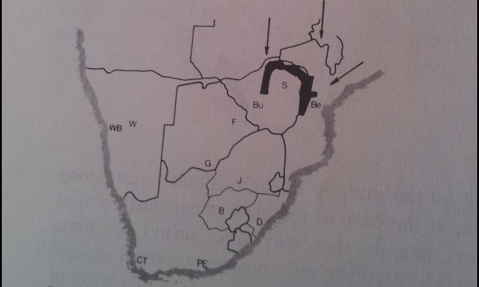
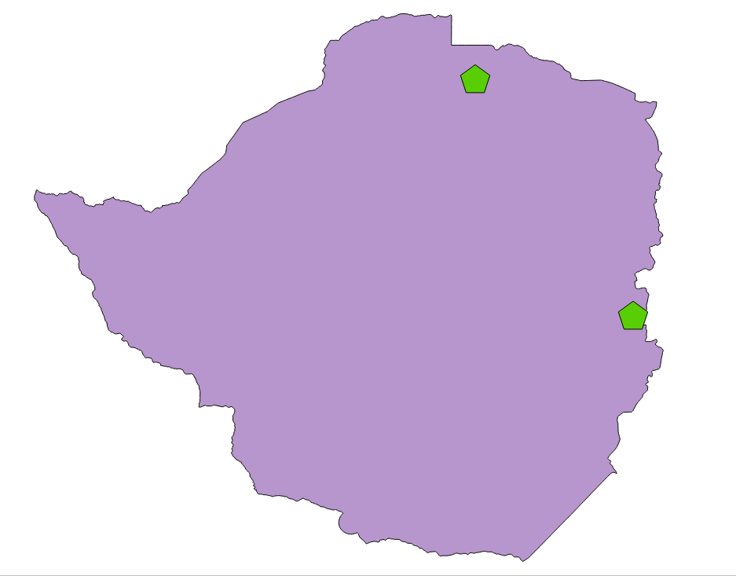
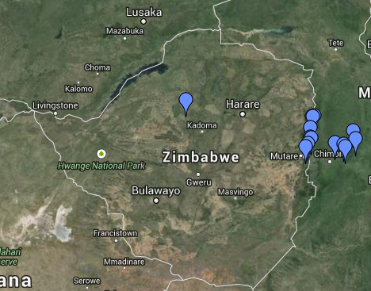
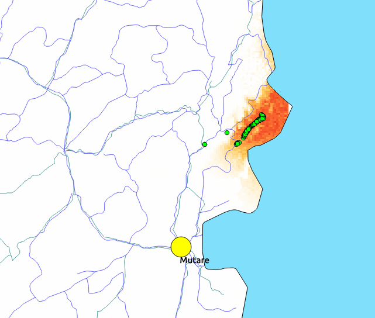
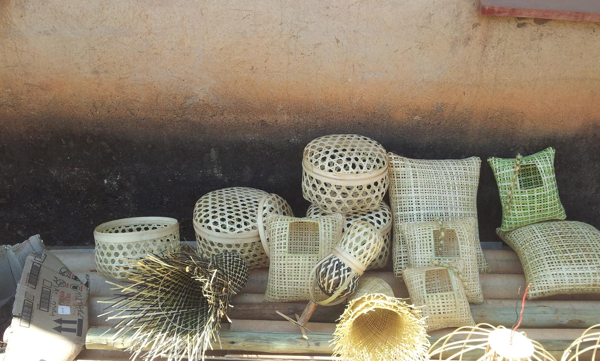

A Preliminary Overview of Zimbabwe's Bamboo Situation
This study serves as the foundational baseline for bamboo sector development in Zimbabwe — addressing resource distribution, growing stock, species biodiversity, removals, products, and market potential.
Bamboo belongs to the Gramineae family with about 90 genera and over 1,200 species. It is naturally distributed in the tropical and subtropical belt between approximately 46° north and 47° south latitude, found across Africa, Asia, and Central and South America. Zimbabwe is host to two indigenous bamboo species — a rich but largely underdeveloped biological foundation.
"One of the main conclusions of this report is that bamboo statistics are poorly studied in Africa as a whole and in Zimbabwe. A common methodological approach for countries across the continent would be highly beneficial."
The study establishes preliminary baseline data on the quantities of bamboo present in the country, where they are found, and identifies two discernible varieties in the Honde Valley. It also uncovers potential key players in sector development and highlights future areas of utilisation expansion.
Currently, Oxytenanthera abyssinica contributes negligibly to Zimbabwe's economy. It is used in small-scale basketry but is absent from formal economic accounting. This report aims to change that trajectory by providing decision-makers with rigorous, field-based evidence.
Zimbabwe's Indigenous Bamboo Species
Zimbabwe hosts two confirmed indigenous bamboo species. Modern genetic analysis continues to shed light on bamboo taxonomy, with some authors suggesting both species should be reclassified under Dendrocalamus, a large Asian genus — though this reclassification has not yet been formally adopted.
Oxytenanthera abyssinica (A. Rich) Munro

Mature Oxytenanthera abyssinica culms — the characteristic sympodial clump habit with nodal branching clearly visible. Honde Valley, Zimbabwe.
The primary and most widespread indigenous species in Zimbabwe, O. abyssinica has a natural distribution throughout tropical Africa — from Senegal east to Eritrea and south to Angola, Mozambique, and the northern reaches of South Africa. It is a lowland bamboo occurring from sea-level to 2,000 m altitude (primarily at 300–1,500 m), thriving in savanna woodland with annual rainfall above 800 mm and 3–7 dry months.
A robust clump-forming bamboo, culms may reach up to 13 m tall with diameters of 5–10 cm when mature. O. abyssinica has a life cycle of between 14 and 21 years. It is sympodial — clump-forming and non-invasive — growing in dense clumps of 3 to over 80 stems, with clumps reaching up to 6 m in diameter. Its stems are widely used for construction (fencing, shelters, land reclamation) and are semi-solid when young and fully solid when older.
The species occurs on soils from various parent rock types, but is associated with well-drained sites with reliable water access — particularly along rivers, drainage lines, termite mounds, and rocky slopes. Saline conditions are unfavourable. In the Honde Valley, an average density of approximately 2,000 stems per hectare was recorded in preliminary studies.
O. abyssinica can yield 14 to 28 tonnes of air-dried culms per hectare per year, with yield depending on the previous season's rainfall.

Morphological detail of O. abyssinica — spikelet clusters, culm structure, and botanical description. Photograph by Mark Hyde from the Flora of Zimbabwe website.
Oreobambos buchwaldii K. Schum.
The second indigenous Zimbabwean species, O. buchwaldii, is less widely distributed than O. abyssinica. The delimitation between the two species continues to be studied by taxonomists, and both benefit from conservation and sector development attention.
Resource Distribution Across Zimbabwe
Oxytenanthera abyssinica is found sparsely in the gullies of streams flowing through the Mavuradonha and Guruve regions of the Great Dyke. In these areas, the vegetation is largely Brachystegia or a more mixed Combretum/Terminalia combination.
"Large swathes of O. abyssinica are found in the southern half of the Honde Valley in Mutasa District — with a majority of mature culms at a density of 1,090 culms per hectare."
In the Honde Valley, bamboo is more robust and flourishes better than in the Great Dyke region. Two varieties were observed and corroborated by local residents who work with bamboo. Residents have historically used this natural resource for subsistence needs, and recently small commercial handicraft enterprises have been established and managed by STEP. Both men and women are involved, and small nurseries have already been set up in the area, though all bamboo is currently bush-harvested.


Forests and woodlands cover 16,544,355 hectares (42.3%) of Zimbabwe's land area. Bamboo in Zimbabwe is found in the Honde Valley in stands comprised solely of bamboo, in mixed tree-bamboo stands, and in agricultural settings. It is also found on the Great Dyke. Bamboo does not yet play an important role nationwide as a source of income, but there is significant scope to develop it for peri-urban and rural communities across harvesting, processing, packaging, and marketing activities.

Field survey locations across Zimbabwe. Pins are concentrated in the Mutare–Chimanimani–Honde Valley corridor (eastern highlands), with an additional record near Kadoma on the Great Dyke.

Honde Valley bamboo density map. The orange zone indicates the highest concentrations of O. abyssinica — the primary bamboo resource area in Zimbabwe. Green dots show individual specimen collection points used in the study.
Utilization Potential for Zimbabwe
China is the world leader in bamboo utilisation, with bamboo-based panels and boards now substituting for hardwood products globally. In India, bamboo is known as "the poor man's timber." During the last 15–20 years, bamboo has developed as an exceptionally valuable and often superior substitute for wood across industrial applications.
Kenya leads Africa in commercial bamboo use — primarily flower farming supports, fencing, and handicrafts. Zimbabwe has the biological foundation to develop a comparable sector. The following use-cases represent the most immediate opportunities:

Bamboo handicrafts produced in the Honde Valley — woven baskets, cushion covers, hats, and decorative items. Small-scale enterprises like these are already generating income for community members, with STEP supporting market development.
Bamboo Charcoal
Most immediate large-scale opportunity. Supplying charcoal to the tobacco curing industry — an application with prior interest from Northern Tobacco and ZLT. The calorific value of bamboo charcoal is comparable to wood charcoal, and it grows faster with a shorter rotation. Activated bamboo charcoal has 6× the absorption capacity of wood charcoal of equal weight.
Construction Materials
Bamboo is a major construction material in rural areas worldwide. It can be used for posts, roofs, walls, floors, beams, trusses, and fences. In the Honde Valley, bamboo stems are already widely used for fencing, shelters, and land reclamation.
Furniture Manufacturing
A community-run cooperative venture could establish a bamboo furniture unit with machinery and equipment costs estimated at USD $35,000. Requires treatment of O. abyssinica to improve suitability. Feasible once interest in bamboo rises sufficiently.
Pulp, Paper & Cloth
Bamboo fibres can be processed into pulp for paper manufacturing and textiles. This represents a medium-term opportunity as Zimbabwe's bamboo plantation base expands.
Activated Carbon
Bamboo waste can be converted into activated carbon through chemical activation, used for filtering dissolved ions from water. An easy step to implement once a thriving bamboo industry is established.
Land Reclamation
Bamboo has demonstrated capacity to restore degraded land and reduce erosion. In the Great Dyke region, planting along drainage lines and gullies could provide environmental restoration alongside economic returns.
Consumption, Trade & Market Analysis
There are at present very few value-adding bamboo industries in Zimbabwe. The bamboo industry does not currently make any significant contribution to the national economy. There are no bamboo plantations in Zimbabwe — the bamboo harvested in the Honde Valley is taken from semi-wild managed clumps.
The cash value of the small amount of bamboo currently harvested is considered substantial to the communities living in the Honde Valley. The communal land is mostly used for subsistence agriculture, and bamboo provides supplementary income through basket weaving and small handicraft production.
"The potential for bamboo to be used as charcoal for the tobacco industry is significant — and this study is timeous to that end. There are resident experts who can, and are willing to, become involved in facilitating this outcome."
Key constraints identified in the regional literature include: poorly managed plantations across Africa; near-zero labour capital or technology input into bamboo management; and consumption confined to non-processed fencing and flower industry applications. The bamboo sector in central African countries is not well developed, and its economic potential has not been realised by governments or bamboo users.
However, the legal framework in Zimbabwe does permit bamboo cultivation. O. abyssinica is not registered as a reserved plant in the Communal Land Forest Produce Act, though all indigenous bamboos are classified as indigenous timber under the Forest Act. A levy must be paid to the rural district council to trade bamboo and its products, and permission from local authorities is required to cultivate in communal areas.
Growing, Propagating & Harvesting Bamboo
Several propagation methods have been documented for O. abyssinica, enabling nursery production and field establishment across different resource levels:
Rhizome Division
Rhizomes are exposed and fully cut at the neck, approximately 45 cm from the base. They are planted immediately when soil is wet, tamped down firmly. This is the most reliable propagation method for large-scale establishment.
Division of Culms
Three methods are commonly used: vertical planting of cylindrical sections cut between nodes to include buds; horizontal burial of split sections with only buds exposed; and oblique burial of whole or split sections so that buds rest on soil on one side. Research by Abeels (1961) found successful germination with stem sections of 5–6 nodes left on bare soil, particularly if internodes were kept filled with water.
Division of Branches
Branches with 3–4 nodes, extracted from 2–3 year old culms, are planted vertically or obliquely. Germination and rooting occur after 1–4 months. Old branches must not be used.
Harvesting Practices
The clumping habit of O. abyssinica enables natural regeneration after harvesting. Harvesting is done through selection of culms — not clear-felling. The planted area is normally ready for first harvest in 6–8 years. Thereafter, cutting of mature stems can be done at intervals of four or more years. Proper management entails rotational thinning so that there are always some old and new shoots in clumps. In East Africa, culm production was multiplied by judicious 50% thinning of clumps each year.
For sustainable supply to charcoal or commercial industries, bamboo will need to be cultivated — either on small farms adjacent to tobacco-growing operations or in larger managed plantations. The report includes detailed annexures on both homestead and medium-to-large scale plantation models.
Pathways to Sector Development
The key constraints to developing Zimbabwe's bamboo sector are structural, not biological. The resource exists. What is needed is coordinated policy, infrastructure, and knowledge transfer:
The report identifies the following priority actions for sector stakeholders, government, and investors:
- Formally recognise bamboo as a commercial sector within Zimbabwe's national economic framework, enabling access to finance, investment, and agricultural support structures.
- Explore the charcoal-for-tobacco opportunity urgently — engage Northern Tobacco and ZLT with a structured pilot programme, involving resident expert Louise Bragge in the process design.
- Establish managed bamboo plantations — both small-scale homestead models and medium-to-large commercial plantations — to ensure a sustainable supply base for any emerging industry.
- Develop stronger networking links between Honde Valley growers, STEP, the Forestry Commission, rural district councils, and potential commercial buyers.
- Consolidate and distribute information on propagation, establishment, crop management, and harvesting methods — particularly through INBAR's existing technology transfer models, adapted to the Zimbabwean context.
- Register O. abyssinica in national agricultural and forestry statistics, and commission follow-up density and distribution surveys across all known bamboo regions.